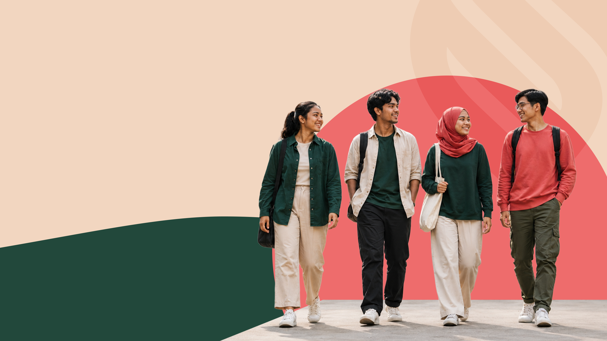

Our Work / Community / Wanita Mendunia
Flagship · Running since 2019 · Community-basedWanita Mendunia
A community-based leadership training that turns women already holding their communities together into recognised, confident leaders — with a curriculum built around real decisions they already make, not theory imported from elsewhere.

Leadership training built from the ground up
Wanita Mendunia trains women who are already leading informally in their communities — organising neighbours, running local initiatives, holding families and networks together — and gives that leadership a name, a structure and a wider reach.
Each cohort runs over several months, community by community, combining practical facilitation skills with the confidence to speak in rooms that were not built with them in mind.
Because leadership is already there — it just isn't recognised
Community leadership is a well of the same kind everywhere: care work, informal problem-solving, quiet organising that keeps a neighbourhood functioning. It is rarely called leadership, rarely paid, and rarely given a platform.
Wanita Mendunia exists to close that gap — not by teaching women to lead, but by giving leadership they already practise a name, a network and room to grow.
Three stages, one cohort at a time
Identify community champions
Local partners and past participants nominate women already organising informally — the starting point is recognition, not recruitment from scratch.
Structured facilitation training
Monthly sessions build practical skills: running a meeting, mediating disputes, presenting to officials, managing a shared budget.
An ongoing peer network
Graduates stay connected across cohorts and states, so a champion in one kampung can call on one in another.
Delivered with local partners
What graduates say
“I was already doing this work. What changed is that people now ask for my opinion before a decision is made, not after.”
Wanita Mendunia graduate · Kedah cohort
“The training gave me the words for what I already knew how to do. Now I train the next group myself.”
Wanita Mendunia graduate · Sabah cohort